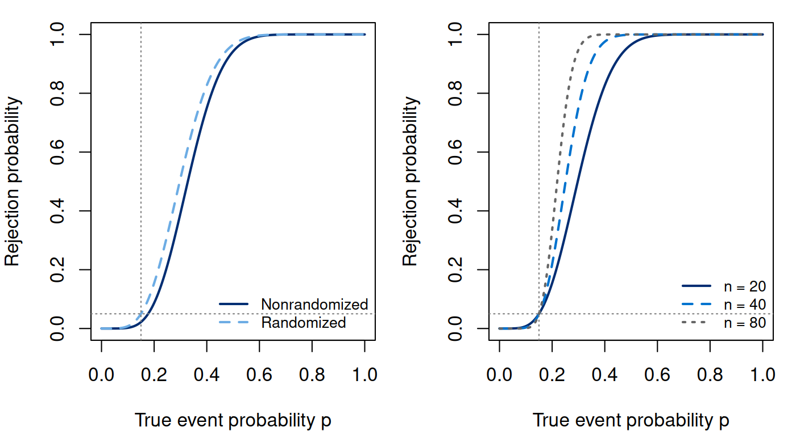

Notes on Statistical Inference
Chapter 7. Hypothesis Testing as a Statistical Procedure
A point estimate reports a plausible parameter value, and a confidence set retains a range of values under a coverage procedure. A hypothesis test asks a narrower question: do the observations reject a specified set of parameter values under a rule with a controlled error probability? We return to the Bernoulli count to construct such a rule and check its operating characteristics for every possible sample.
Suppose a scientifically specified reference probability is . A study records events in independently sampled individuals. The question is whether their common event probability exceeds that reference. An observed proportion of is twice the reference, but that ratio alone supplies neither an error guarantee nor an assessment of practical importance. We need to formulate the null, determine what observations count against it, and examine the procedure under both null and alternative distributions. The reference value is illustrative; it is not a clinical treatment threshold.
We first derive an exact procedure in the Bernoulli model. Approximation can then be evaluated against its actual rejection probability, using the confidence-set and likelihood calculations from Chapter 6.
7.1 A testing rule and its error probabilities
Retain , , and . The hypotheses are (7.1) The null is composite: it contains every probability at or below the reference. An event is encoded by , so larger counts provide evidence in the stated alternative direction. Reversing the encoding would require reversing the rejection rule, not merely reusing its numerical cutoff.
A test is a function . It gives the conditional probability of rejection at the observed sample. A nonrandomized test has values zero and one; a randomized test also uses an independent random device when its value lies strictly between them. Its power function is (7.2) We call it level if its size is at most . Size is the actual worst-case rejection probability under the null; level is an upper bound promised by the procedure. At an alternative value, is power and is the probability of failing to reject. At a null value, rejection is a type I error. These are probabilities over repeated entire experiments, not probabilities assigned to the truth of the observed hypothesis.
The model also states what is repeated. The sample size is fixed in advance, the observations are independent, and they share one event probability. Dependence, unequal risks, outcome-selected sampling, or optional stopping changes the count distribution. A small nominal tail probability computed from the wrong distribution cannot repair those changes. Nor does a one-sample test of a proportion establish that an exposure caused the events. The inferential target here is one population probability under a sampling model.
Failure to reject is a procedural outcome, rather than proof that . Alternatives near can be difficult to distinguish at this sample size. Conversely, a sufficiently large sample can detect a scientifically negligible increase. A useful report therefore combines the estimate, a compatible uncertainty assessment, the prespecified testing question, and the operating characteristics relevant to meaningful alternatives. The test should not replace the scientific question with a binary label.
7.2 Exact calibration by enumerating the count
Consider the upper-tail rule . Its rejection probability is (7.3) The expression is exact for every . To show that its largest null probability occurs at , use independent and construct . For each realized vector of uniforms, cannot decrease when increases. Hence and its expectation are nondecreasing. This coupling argument establishes the composite-null calibration without differentiating a long binomial sum.
Choose the smallest integer cutoff with an acceptable tail: (7.4) The value describes never rejecting, so the set is never empty. For , , and , the cutoff is . Its size is . Reducing the cutoff to would give size , exceeding the promised level. No rounding to “about five percent” makes that latter rule a level- test.
This gap is a consequence of discreteness. A nonrandomized upper-tail rule can only choose among a finite set of rejection probabilities. For the conservative rule, power at is ; power at is . Thus the observed , although twice the reference in proportion, does not reject with the exact level- rule. The correct interpretation is that this count does not pass the prespecified rejection criterion. It does not assert equality of probabilities or absence of a meaningful effect.
The R implementation searches count states rather than using a rounded normal quantile:
Run the complete R example
Dependencies: base R. This complete block includes the data, setup and calculations. Run it in a fresh R session. Short code excerpts above explain individual steps; this block supplies their shared setup. Figures and tables are written to a temporary directory.
Complete R example
# Complete R example. Synthetic data; no external files are required.
local({
previous.directory <- getwd()
example.directory <- tempfile("biomedical-example-")
dir.create(example.directory)
setwd(example.directory)
on.exit(setwd(previous.directory))
dir.create("generated",showWarnings=FALSE)
# exact testing and approximate calibration in a Bernoulli model.
out <- "generated"; out.dir <- out
dir.create(out,recursive=TRUE,showWarnings=FALSE)
p0 <- 0.15; alpha <- 0.05; n <- 20L
# An exact upper-tail cutoff; c = n+1 means that no count rejects.
upper.test <- function(n, p0, alpha) {
k <- 0:n
mass <- dbinom(k, n, p0)
tails <- c(pbinom(k - 1, n, p0, lower.tail = FALSE), 0)
c <- which(tails <= alpha)[1] - 1L
boundary <- c - 1L
gamma <- if (boundary >= 0L) (alpha - tails[c + 1L]) / mass[boundary + 1L] else 0
stopifnot(gamma >= -1e-12, gamma <= 1 + 1e-12)
phi <- as.numeric(k >= c)
if (boundary >= 0L) phi[boundary + 1L] <- gamma
list(c = c, boundary = boundary, gamma = gamma,
size = tails[c + 1L], phi = phi)
}
test <- upper.test(n, p0, alpha)
k <- 0:n; q <- k/n; null.mass <- dbinom(k, n, p0)
exact.p <- pbinom(k - 1, n, p0, lower.tail = FALSE)
z.score <- (q - p0) / sqrt(p0 * (1 - p0) / n)
# Wald is undefined at q=0 or q=1. Limits below implement a comparison rule,
# rather than turning a zero standard error into a valid normal approximation.
z.wald <- rep(NA_real_, length(k))
interior <- k > 0 & k < n
z.wald[interior] <- (q[interior] - p0) / sqrt(q[interior] * (1-q[interior]) / n)
z.wald[k == 0] <- -Inf; z.wald[k == n] <- Inf
xlogratio <- function(x, y) {
ans <- numeric(length(x)); pos <- x > 0
ans[pos] <- x[pos] * log(x[pos]/y)
ans
}
dev <- 2*n*(xlogratio(q, p0) + xlogratio(1-q, 1-p0))
z.lr <- sign(q-p0)*sqrt(pmax(dev, 0))
critical <- qnorm(1-alpha)
comparison <- data.frame(count = k, proportion = q, null.mass = null.mass,
exact.p = exact.p, score.stat = z.score, wald.stat = z.wald, signed.root.lr = z.lr,
score.p = pnorm(z.score, lower.tail = FALSE),
wald.p = pnorm(z.wald, lower.tail = FALSE),
lr.p = pnorm(z.lr, lower.tail = FALSE),
exact.reject = as.integer(k >= test$c),
randomized.reject.probability = test$phi,
score.reject = as.integer(z.score > critical),
wald.reject = as.integer(z.wald > critical),
lr.reject = as.integer(z.lr > critical))
write.csv(comparison, file.path(out.dir, "ch09-comparison.csv"), row.names = FALSE)
# Entire power curves are exact binomial sums, without simulation error.
p.grid <- seq(0, 1, by = 0.005)
operating <- do.call(rbind, lapply(c(20L, 40L, 80L), function(nn) {
do.call(rbind, lapply(c(0.01, 0.05, 0.10), function(aa) {
tt <- upper.test(nn, p0, aa)
power <- pbinom(tt$c-1, nn, p.grid, lower.tail = FALSE)
randomized.power <- power + tt$gamma*dbinom(tt$boundary, nn, p.grid)
data.frame(n = nn, alpha = aa, null.boundary = p0, p = p.grid,
cutoff = tt$c, boundary = tt$boundary, gamma = tt$gamma,
exact.size = tt$size, conservative.power = power,
randomized.power = randomized.power)
}))
}))
write.csv(operating, file.path(out.dir, "ch09-operating.csv"), row.names = FALSE)
# A separately specified uniform prior gives a posterior hypothesis probability.
posterior.null <- pbeta(p0, 6+1, n-6+1)
stopifnot(abs(posterior.null - 0.028741031856184)<1e-10)
# Quantifying invalid post-selection: selecting one of two independent tests.
selected.size <- 1-(1-test$size)^2
approx.size <- function(reject) sum(null.mass[reject == 1])
summary <- data.frame(procedure = c("Exact nonrandomized", "Exact randomized", "Score-normal", "Wald-normal", "Signed-root-LR-normal"),
size = c(test$size, sum(null.mass*test$phi),
approx.size(comparison$score.reject), approx.size(comparison$wald.reject),
approx.size(comparison$lr.reject)))
write.csv(summary, file.path(out.dir, "ch09-size.csv"), row.names = FALSE)
# Exact p-values are super-uniform under every p<=p0.
for (p in seq(0, p0, length.out = 31)) {
mass <- dbinom(k, n, p)
for (a in seq(0, 1, length.out = 101))
stopifnot(sum(mass[exact.p <= a]) <= a + 2e-12)
}
stopifnot(all(diff(exact.p) <= 1e-12), abs(sum(null.mass)-1)<1e-12,
test$size <= alpha, abs(sum(null.mass*test$phi)-alpha)<1e-12,
identical(comparison$score.reject,as.integer(k>=6)),
identical(comparison$wald.reject,as.integer(k>=7)),
identical(comparison$lr.reject,as.integer(k>=6)),
all(is.finite(dev)), all(dev >= -1e-12),
abs(exact.p[7]-0.067307974185774)<1e-12)
# Monotone power; randomized threshold improves upon its conservative version.
for (nn in c(20L,40L,80L)) for (aa in c(.01,.05,.10)) {
d <- operating[operating$n == nn & operating$alpha == aa, ]
stopifnot(all(diff(d$conservative.power) >= -1e-12),
all(diff(d$randomized.power) >= -1e-12),
all(d$randomized.power >= d$conservative.power - 1e-12))
}
# NP inequality checked against many arbitrary randomized tests with level <=alpha.
set.seed(602917)
for (p1 in c(.20,.30,.50,.80)) {
alt <- dbinom(k, n, p1)
for (i in seq_len(1000L)) {
candidate <- runif(n+1)
candidate <- candidate*min(1, alpha/sum(null.mass*candidate))
stopifnot(sum(alt*test$phi) >= sum(alt*candidate)-1e-12)
}
}
# Known-variance normal test supplies an exact continuous benchmark.
normal.power <- function(mu, mu0, sigma, n, alpha) {
pnorm(qnorm(1-alpha) - sqrt(n)*(mu-mu0)/sigma, lower.tail = FALSE)
}
normal.n <- ceiling(((qnorm(.95)+qnorm(.80))/.5)^2)
stopifnot(abs(normal.power(0,0,1,20,.05)-.05)<1e-12,
normal.n == 25L, normal.power(.5,0,1,normal.n,.05) >= .8,
normal.power(.5,0,1,normal.n-1,.05) < .8)
# Tables are generated by the executable script to keep R and prose aligned.
con <- file(file.path(out.dir, "ch09-size.tex"), "w")
writeLines(c("\\begin{tabular}{lr}\\toprule", "Procedure & Exact null rejection probability \\\\", "\\midrule"), con)
for (i in seq_len(nrow(summary)))
writeLines(sprintf("%s & %.5f \\\\", summary$procedure[i], summary$size[i]), con)
writeLines(c("\\bottomrule", "\\end{tabular}"), con); close(con)
make.figure <- function(file, ext) {
path <- file.path(out.dir, paste0(file,".",ext))
if (ext=="pdf") cairo_pdf(path,width=7,height=3.8) else png(path,width=1400,height=760,res=200)
par(mar=c(4,4,1,1),mfrow=c(1,2))
d <- operating[operating$n == 20 & operating$alpha == .05,]
plot(d$p,d$conservative.power,type="l",lwd=2,col="#002D72",ylim=c(0,1),
xlab="True event probability p",ylab="Rejection probability")
lines(d$p,d$randomized.power,lwd=2,lty=2,col="#6CACE4")
abline(v=p0,lty=3,col="gray50"); abline(h=alpha,lty=3,col="gray50")
legend("bottomright",c("Nonrandomized","Randomized"),lty=c(1,2),lwd=2,
col=c("#002D72","#6CACE4"),bty="n",cex=.8)
for (i in seq_along(c(20,40,80))) {
nn <- c(20,40,80)[i]
dd <- operating[operating$n==nn & operating$alpha==.05,]
if(i==1) plot(dd$p,dd$randomized.power,type="l",lwd=2,col="#002D72",ylim=c(0,1),
xlab="True event probability p",ylab="Rejection probability")
else lines(dd$p,dd$randomized.power,lwd=2,lty=i,col=c("#002D72","#0072CE","gray40")[i])
}
abline(v=p0,lty=3,col="gray50");abline(h=alpha,lty=3,col="gray50")
legend("bottomright",paste("n =",c(20,40,80)),lty=1:3,lwd=2,
col=c("#002D72","#0072CE","gray40"),bty="n",cex=.8)
dev.off()
}
for(ext in c("pdf","png")) make.figure("ch09-power",ext)
writeLines(c("ch09-operating.csv: n, alpha, null.boundary, p, cutoff, boundary, gamma, exact.size, conservative.power, randomized.power.",
"ch09-comparison.csv: each possible count and its null mass, exact and approximate p-values, rejection rules.",
"ch09-size.csv: exact null probabilities for five rules; no simulation is used.",
"Wald statistics at endpoint counts are stored as +/-Inf, and their tail probabilities are finite.",
"The count model fixes n and assumes independent, identically distributed Bernoulli observations.",
"Power curves are finite sums of binomial probabilities."),
file.path(out.dir,"ch09-schema.txt"))
print(summary)
writeLines(capture.output(sessionInfo()),file.path(out.dir,"ch09-session-info.txt"))
# Exact discrete sample-size design at a specified meaningful alternative.
design <- do.call(rbind,lapply(1:200,function(nn) {
rule <- upper.test(nn,.15,.05)
data.frame(n=nn,cutoff=rule$c,size=rule$size,
power=pbinom(rule$c-1,nn,.30,lower.tail=FALSE))
}))
first.design <- which(design$power>=.80)[1]
stopifnot(design$n[first.design]==48L,design$cutoff[first.design]==12L,
all(design$power[design$n<48]<.80),all(design$size<=.05+1e-12),
design$power[design$n==49]<design$power[design$n==48])
write.csv(design,file.path(out.dir,"ch09-exact-design.csv"),row.names=FALSE)
print(design[design$n %in% c(48L,49L),])
# From first principles: enumerate the prespecified upper count tail.
k.obs <- 6L; n.obs <- 20L; p.ref <- .15
count.states <- 0:n.obs
null.prob <- dbinom(count.states,n.obs,p.ref)
upper.direct <- sum(null.prob[count.states >= k.obs])
# Two-sided orderings are separate choices; neither changes the data.
lower.direct <- sum(null.prob[count.states <= k.obs])
equal.tail.direct <- min(1,2*min(upper.direct,lower.direct))
probability.direct <- sum(null.prob[
null.prob <= null.prob[k.obs+1]*(1+1e-7)])
# Standard R workflow: specify the scientific direction rather than a default.
upper.fit <- stats::binom.test(k.obs,n.obs,p=p.ref,
alternative="greater",conf.level=.95)
two.sided.fit <- stats::binom.test(k.obs,n.obs,p=p.ref,
alternative="two.sided",conf.level=.95)
c(upper.tail=upper.fit$p.value,
two.sided.probability.order=two.sided.fit$p.value,
two.sided.equal.tail=equal.tail.direct)
stopifnot(abs(upper.direct-upper.fit$p.value)<1e-12,
abs(probability.direct-two.sided.fit$p.value)<1e-12)
# Compare all count states, including symmetric mass ties and boundaries.
for(nn in c(1L,10L,20L,50L)) for(pp in c(.01,.15,.30,.50,.99)) {
mass <- dbinom(0:nn,nn,pp)
for(kk in 0:nn) {
tails <- c(sum(mass[(0:nn)>=kk]),sum(mass[(0:nn)<=kk]))
fitted <- c(stats::binom.test(kk,nn,p=pp,alternative="greater")$p.value,
stats::binom.test(kk,nn,p=pp,alternative="less")$p.value)
probability.order <- sum(mass[mass <= mass[kk+1]*(1+1e-7)])
p.two <- stats::binom.test(kk,nn,p=pp,alternative="two.sided")$p.value
stopifnot(max(abs(tails-fitted))<1e-12,
abs(probability.order-p.two)<1e-12)
}
}
testing.workflow <- data.frame(
procedure=c("Upper tail: direct", "Upper tail: binom.test",
"Two-sided: doubled smaller tail", "Two-sided: probability ordering"),
p.value=c(upper.direct,upper.fit$p.value,equal.tail.direct,
two.sided.fit$p.value))
write.csv(testing.workflow,file.path(out.dir,"ch09-r-workflow.csv"),row.names=FALSE)
capture.output(print(testing.workflow,digits=8),
file=file.path(out.dir,"ch09-r-workflow-output.txt"))
print(testing.workflow,digits=8)
cat("\nSelected numerical results\n")
for (candidate in c("reader", "summary", "summary.mc", "perf", "comparison", "route.comparison", "test", "tab", "exact", "workflow.ci", "coef.tab", "evaluation.table")) {
if (exists(candidate, inherits=FALSE)) {
value <- get(candidate, inherits=FALSE)
if (is.data.frame(value) || is.matrix(value)) { cat(candidate, "\n"); print(utils::head(value,8)) }
}
}
cat("R", as.character(getRversion()), "\n")
})
This excerpt shows a step inside the preceding complete R example; it uses that block’s data and setup.
upper.test <- function(n, p0, alpha) {
k <- 0:n
mass <- dbinom(k, n, p0)
tails <- c(pbinom(k - 1, n, p0, lower.tail = FALSE), 0)
c <- which(tails <= alpha)[1] - 1L
boundary <- c - 1L
gamma <- if (boundary >= 0L) (alpha - tails[c + 1L]) / mass[boundary + 1L] else 0
stopifnot(gamma >= -1e-12, gamma <= 1 + 1e-12)
phi <- as.numeric(k >= c)
if (boundary >= 0L) phi[boundary + 1L] <- gamma
list(c = c, boundary = boundary, gamma = gamma,
size = tails[c + 1L], phi = phi)
}
test <- upper.test(n, p0, alpha)
k <- 0:n; q <- k/n; null.mass <- dbinom(k, n, p0)
exact.p <- pbinom(k - 1, n, p0, lower.tail = FALSE)Here pbinom(c-1,n,p0,lower.tail=FALSE) computes
.
The subtraction by one matters. Using the tail beyond
would omit the boundary count, changing both the rejection probability
and the stated rule. A diagnostic calculation should compare the cutoff
with the adjacent cutoff, since that verifies why a less conservative
integer choice is unavailable.
7.3 Why likelihood ratios select the upper tail
A valid level bound does not by itself imply good discrimination. To compare procedures, first fix a simple alternative . The ratio of count probabilities is (7.5) For , the term in braces exceeds one. Therefore larger counts have larger alternative-to-null likelihood ratios. The count orders observations by how strongly they distinguish these two distributions.
The Neyman–Pearson argument turns that ordering into an optimality statement. Let be two densities with respect to a common measure. Suppose a rule rejects where , does not reject where , and may randomize on equality, with . For any competitor satisfying , (7.6) In the first integral the factors have the same sign: where the likelihood ratio is large, ; where it is small, . The second term is nonnegative by the level constraint and . Consequently has at least as much power as any level- competitor for the chosen simple alternative. This proof compares complete procedures; it is not a claim that a large likelihood ratio makes the null have a small posterior probability.
For the Bernoulli problem, every alternative gives the same ordering in (7.5). A size- upper-tail test with suitable boundary randomization is therefore most powerful for each such alternative simultaneously. Its monotone power also makes it level over the whole composite null. This yields a uniformly most powerful test for (7.1), within the class of tests that permits randomization.
The count loses no information for this comparison. Conditional on , every binary sequence with that count has probability , independent of . Replacing any sample-based rule by preserves its rejection probability at every . This is the testing analogue of conditioning on a sufficient statistic. It also reveals that seemingly nonrandomized choices among equal-count sequences can act as partial rejection after conditioning. We should not label an integer cutoff uniformly most powerful at a larger nominal level merely because we chose not to randomize.
7.4 Boundary randomization and honest power comparisons
Boundary randomization uses the remaining type I error allowance. Reject at , reject with probability at , and otherwise do not reject. Choose (7.7) Then exactly and (7.8) Because the rejection function is nondecreasing in , the coupling argument still controls the composite null. At , power increases from to ; at it increases from to .
Randomizing a substantive decision may be unappealing. Its value here is conceptual: it separates the statistical cost of discreteness from the shape of the best rejection ordering. The conservative rule remains valid and can be chosen for transparency. At its achieved size , it is a most powerful test against every higher-probability alternative. At nominal level , the randomized procedure has a larger allowance and can improve power. Comparing power without reporting achieved size would confound those facts.


The right panel illustrates the design problem. We must specify an alternative worth detecting before choosing ; “eighty percent power” is incomplete without that alternative, the rejection rule, and the level. Under discrete nonrandomized tests, increasing can occasionally move an integer cutoff enough to reduce power locally. Such irregularities are calibration effects, rather than evidence that information in an additional independent observation is intrinsically harmful. A procedure with more observations can always ignore them, but a particular automatically selected cutoff need not preserve every pointwise comparison.
A fixed experiment cannot sharply separate probabilities immediately on opposite sides of the reference. For any count-based test, randomized or not, its power is a finite polynomial in and hence is continuous. In particular, (7.9) Thus a level- test cannot have power uniformly over all at a fixed finite sample size. This is a structural limit rather than a defect of the chosen method. The practical design question needs a separation that matters scientifically, such as detecting against the reference . A prespecified interval of meaningful alternatives can also be examined rather than one convenient value. In either case, low power near the null boundary explains why a nonrejection is weak evidence for a broad claim of equivalence. An equivalence or noninferiority question requires its own hypotheses and scientifically justified margin; it is not obtained by reversing the verbal meaning of an ordinary nonrejection.
Before inspecting Figure 7.1, predict how the curves change when the sample size or the level increases. At a given null boundary, greater power under alternatives should be examined together with the permitted null rejection probability. Moving a cutoff changes the procedure and its operating characteristics.
An exact sample-size search makes the discrete design issue concrete.
Suppose the design target is at least
power at
,
with
and a nonrandomized
level-
upper-tail rule. Using the function upper.test defined
above, enumerate candidate sample sizes:
This excerpt shows a step inside the preceding complete R example; it uses that block’s data and setup.
design <- do.call(rbind,lapply(1:200,function(nn) {
rule <- upper.test(nn,.15,.05)
data.frame(n=nn,cutoff=rule$c,size=rule$size,
power=pbinom(rule$c-1,nn,.30,lower.tail=FALSE))
}))
design[which(design$power>=.80)[1],]The first qualifying size is , with cutoff 12, achieved size , and power . Applying the same cutoff-selection algorithm at moves the cutoff to 13 and gives power . This decrease comes from recalibrating the discrete rule: a design with 49 observations could retain the original test on its first 48 observations and keep its power. A search should therefore evaluate every candidate in order, rather than use a binary search that assumes monotonic power. A final design report names the chosen rule and the meaningful alternative, not just the sample size.
7.5 A p-value is a calibrated function of the data
For the upper-tail ordering define the exact p-value (7.10) It is the smallest level at which a nonrandomized upper-tail rule would reject the observed count, with rejection at equality. At it equals . Once the count is observed, this is a fixed number. Before observation, is a random variable whose null distribution supplies its calibration.
Specifically, for every and , (7.11) To prove this, note that the p-value decreases with . Its values at or below , if any, form an upper tail . The probability of that tail at is , and coupling bounds the probability at every smaller . This property is sometimes called super-uniformity. Discreteness makes the inequality strict for many ; an exact p-value need not have a continuous uniform null distribution.
There is a direct bridge to confidence sets. For a family of level- tests indexed by a candidate parameter , collect the candidates not rejected at the realized data. If is that set, then under the true , the event is exactly rejection of that true candidate. Consequently . This is the inversion principle behind the score intervals in Chapter 6. It transfers an error statement only when the entire family of tests has the claimed calibration. Inverting an approximate test does not manufacture exact coverage. For directional tests the resulting set is typically one-sided, and equality conventions at a discrete tail boundary should be stated rather than hidden by decimal rounding. The bridge connects testing and estimation without making them identical reporting tasks: the set retains the range of candidates, while a single test supplies one prespecified comparison.
The definition does not give , the chance that the result was “caused by randomness,” or the chance that replication will fail. No prior over probabilities has been supplied by a p-value calculation. If we separately adopt a prior, the posterior at is and . That is a different calculation with an additional modeling choice, not a reinterpretation of the exact tail. Chapter 8 derives this conditioning calculation and examines its interpretation. The p-value also does not give the probability of the observed count alone: the tail includes outcomes judged at least as inconsistent in the prespecified direction. Different alternative directions and different orderings can produce different valid p-values. In particular, simply doubling a one-sided number is not a universal definition of an exact two-sided test in a discrete asymmetric model.
From first principles
For the observed out of twenty, enumerate the specified upper count tail. The code makes both the sample states and the null probabilities visible:
This excerpt shows a step inside the preceding complete R example; it uses that block’s data and setup.
k.obs <- 6L; n.obs <- 20L; p.ref <- .15
count.states <- 0:n.obs
null.prob <- dbinom(count.states,n.obs,p.ref)
upper.direct <- sum(null.prob[count.states >= k.obs])
# Two-sided orderings are separate choices; neither changes the data.
lower.direct <- sum(null.prob[count.states <= k.obs])
equal.tail.direct <- min(1,2*min(upper.direct,lower.direct))
probability.direct <- sum(null.prob[
null.prob <= null.prob[k.obs+1]*(1+1e-7)])It returns , agreeing with equation (7.10). The direction is part of the scientific question, not a setting to choose after comparing p-values.
Standard R workflow
stats::binom.test() performs that same calculation with
alternative="greater". Its default alternative is
two-sided, which would answer a different question [3]:
This excerpt shows a step inside the preceding complete R example; it uses that block’s data and setup.
upper.fit <- stats::binom.test(k.obs,n.obs,p=p.ref,
alternative="greater",conf.level=.95)
two.sided.fit <- stats::binom.test(k.obs,n.obs,p=p.ref,
alternative="two.sided",conf.level=.95)
c(upper.tail=upper.fit$p.value,
two.sided.probability.order=two.sided.fit$p.value,
two.sided.equal.tail=equal.tail.direct)The upper-tail result remains . For a two-sided comparison, the tested R 4.3.3 implementation includes counts whose null probability mass is no larger than the observed count’s mass, yielding . Doubling the smaller tail instead gives . Both are finite-sample calculations with different orderings; neither should be forced to match the other. The complete R example enumerates the probability ordering directly, using the package’s small relative tolerance to include numerically equal masses, and checks agreement across all counts in several symmetric and asymmetric binomial models.
The package’s reported two-sided confidence interval uses equal-tail Clopper–Pearson bounds, as in Chapter 6. It is not the inversion of its probability-ordered two-sided p-value. A p-value and an interval printed by one function therefore need not describe one exactly matching inversion. Report the alternative, interval construction, and confidence level explicitly rather than inferring them from a shared function name.
Preselection is part of the calibration. If two independent studies both use a rule with achieved size , rejecting whenever either rejects has size under their common boundary null. For our conservative rule this is approximately , exceeding its single-study size. Selecting among more outcomes or analyses changes the procedure even when only one final p-value is printed. Dependence changes this particular formula, but does not justify ignoring selection. Similarly, continuing recruitment until the ordinary fixed- p-value crosses requires a sequentially valid design; (7.11) alone is not such a guarantee.
7.6 Score, Wald, and likelihood ratio: an approximation audit
Exact enumeration has shown which counts the calibrated rule rejects. We now compare that benchmark with the large-sample constructions developed in Chapter 5 and Chapter 6. The binomial log likelihood is , up to an additive constant. For the point null in the interior, the signed score and Wald statistics are (7.12) The score divides the score at the null by its null standard deviation; the displayed simplification uses the Bernoulli information. The Wald statistic instead standardizes the fitted estimate using a fitted variance. Both compare with a standard normal reference only under the regular large-sample conditions developed in Chapter 6. They are not algebraically equal at a finite count.
The unrestricted likelihood-ratio deviance is (7.13) with . A signed-root version is . For a directional alternative, compare with a normal upper-tail critical value. The constrained likelihood-ratio statistic for equals zero when and equals above it. Its boundary-null limit is not an unrestricted two-sided law; the signed-root formulation here makes the direction explicit. We do not import a two-sided reference cutoff into a one-sided test.
At , , , and . The corresponding normal upper-tail p-values are , , and . Two reject at nominal and one does not. That disagreement is understandable: the numerator is the same for score and Wald, but at the fitted variance is larger than the null variance. The deviance summarizes a likelihood decrease rather than a squared distance using either single denominator.
| Procedure | Exact null rejection probability |
|---|---|
| Exact nonrandomized | 0.02194 |
| Exact randomized | 0.05000 |
| Score-normal | 0.06731 |
| Wald-normal | 0.02194 |
| Signed-root-LR-normal | 0.06731 |
The table is an audit, not a rule for selecting whichever method rejects. Score-normal and signed-root-LR-normal both reject at , giving actual size . Wald-normal rejects at , giving . Each displayed comparison rule rejects in an upper count tail, so coupling also identifies these values as its worst-case size over the composite null. Thus neither “the normal approximation is close” nor a familiar method name establishes level here. We know which exact count outcomes produce the difference. Approximations can be useful in more complex settings, but their assumptions and empirical calibration deserve equally explicit attention.
Exact continuous calibration is possible when the model supplies it. For independent normal observations with known variance, is standard normal at the null boundary at every sample size. Exercise 7.3 derives its power and sample-size calculation. With , , level , and desired power , the smallest integer sample size is . The script verifies power there and at . These exact normal calculations provide a useful contrast with the Bernoulli approximation audit; they do not establish that another statistic is normal because it has been standardized.
At or , the Wald denominator vanishes. The script uses limiting signs to define a complete comparison rule at those endpoints; it does not call a zero standard error valid uncertainty. At the null boundary , a stronger failure occurs: with certainty under the null, while any observed event is impossible under that model. The rule rejecting when has size zero and power . Normal score denominators and interior information arguments do not apply. Boundary problems need their own probability calculations.
7.7 From a tail calculation to a scientific interpretation
The calculations enumerate all count outcomes. A useful computational check compares the randomized rule’s power with other rejection vectors constrained to have null rejection probability at most . The code below constructs such competitors and compares their power at several alternatives. It illustrates the optimization problem behind Neyman–Pearson; the inequality proved earlier establishes optimality for all competitors, including those omitted from a finite numerical comparison.
This excerpt shows a step inside the preceding complete R example; it uses that block’s data and setup.
# Monotone power; randomized threshold improves upon its conservative version.
for (nn in c(20L,40L,80L)) for (aa in c(.01,.05,.10)) {
d <- operating[operating$n == nn & operating$alpha == aa, ]
stopifnot(all(diff(d$conservative.power) >= -1e-12),
all(diff(d$randomized.power) >= -1e-12),
all(d$randomized.power >= d$conservative.power - 1e-12))
}
# NP inequality checked against many arbitrary randomized tests with level <=alpha.
set.seed(602917)
for (p1 in c(.20,.30,.50,.80)) {
alt <- dbinom(k, n, p1)
for (i in seq_len(1000L)) {
candidate <- runif(n+1)
candidate <- candidate*min(1, alpha/sum(null.mass*candidate))
stopifnot(sum(alt*test$phi) >= sum(alt*candidate)-1e-12)
}
}The observed proportion is , but the score-normal tail calculation does not assign a probability to the hypothesis that . It describes a reference tail under the null model. We also cannot select a test merely because it gives the smaller p-value and then use that test’s original calibration without accounting for the selection. Here exact enumeration shows that using the null variance in a normal-reference score test does not give an exact five-percent test.
To interpret the result, we state the prespecified direction and sampling model, calculate the exact count tail, and distinguish approximation from finite-sample guarantees. For this experiment, the exact nonrandomized level- upper-tail test does not reject at ; its p-value is and its achieved size is . The point estimate remains . That uncertainty matters to scientific interpretation, but no calculation here turns rejection into a treatment recommendation. Chapter 4 already showed why the loss of a scientific action must be specified separately from estimation quality. Here type I error control supplies another distinct procedural target.
7.8 Exercises
A level bound and an achieved size. Let and test against . Among upper-tail rules rejecting for , find the smallest integer with size at most , its achieved size, and its power at . Prove that the largest null rejection probability occurs at , rather than checking only that point numerically.
Use the remaining error allowance transparently. For the preceding binomial test, reject whenever and reject at with probability using a fresh independent uniform random variable; otherwise do not reject. Derive for composite-null size exactly and calculate power at . Compare with the nonrandomized rule at its actual size, and explain why independence of the randomization device matters.
An exact normal design calculation. Let independent , with known , and test against at . Derive the exact test and its power. For and target power , , derive the smallest positive integer sample size meeting that target. Explain which distributional fact makes this exact and why the same formula does not automatically give an exact binomial design.
A boundary null can have a level-zero test. For , , test against . Find a nonrandomized test with size zero and derive its power function. Explain why an interior normal-score calculation is unavailable and what rejecting this null does and does not establish scientifically.